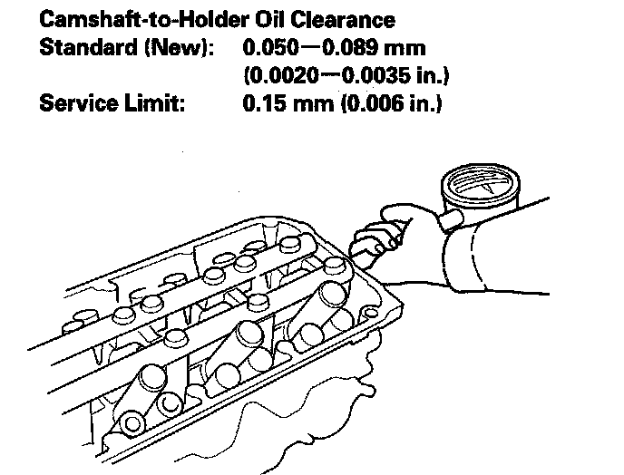
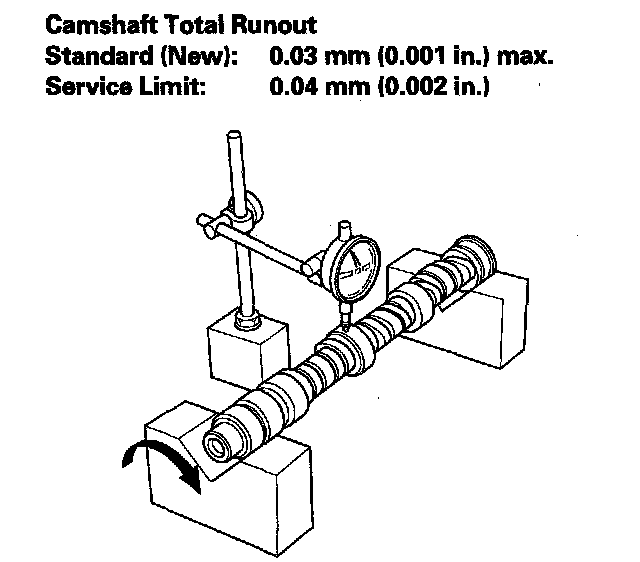

Camshaft Inspection
Camshaft Inspection1. Remove the cylinder head.
2. Remove the rocker arms.
3. Put the rocker shafts on the cylinder head, then tighten the bolts to the specified torque.
NOTE: Apply new engine oil to the threads and flange of the exhaust rocker shaft mounting bolts.
4. Seat the camshaft by pushing it toward the rear of the cylinder head.
5. Zero the dial indicator against the end of the camshaft. Push the camshaft back and forth and read the end play. If the end play is beyond the service limit, replace the thrust cover and recheck. If it is still beyond the service limit, replace the camshaft.
6. Remove the camshaft thrust cover (A), then pull out the camshaft (B).
7. Wipe the camshaft clean, then inspect the lift ramps. Replace the camshaft if any lobes are pitted, scored, or excessively worn.
8. Measure the diameter of each camshaft journal.
9. Zero the gauge to the journal diameter.
10. Clean the camshaft bearing surfaces in the cylinder head. Measure the inside diameter of each camshaft bearing surface, and check for an out-of-round condition.
^ If the camshaft-to-holder clearance is within the service limit, go to step 12.
^ If the camshaft-to-holder clearance is beyond the service limit and the camshaft has been replaced, replace the cylinder head.
^ If the camshaft-to-holder clearance is beyond the service limit and the camshaft has not been replaced, go to step 11.

11. Check the total runout with the camshaft supported on V-blocks.
^ If the total runout of the camshaft is within the service limit, replace the cylinder head.
^ If the total runout is beyond the service limit, replace the camshaft and recheck the oil clearance. If the oil clearance is still out of tolerance, replace the cylinder head.

12. Measure the cam lobe height.